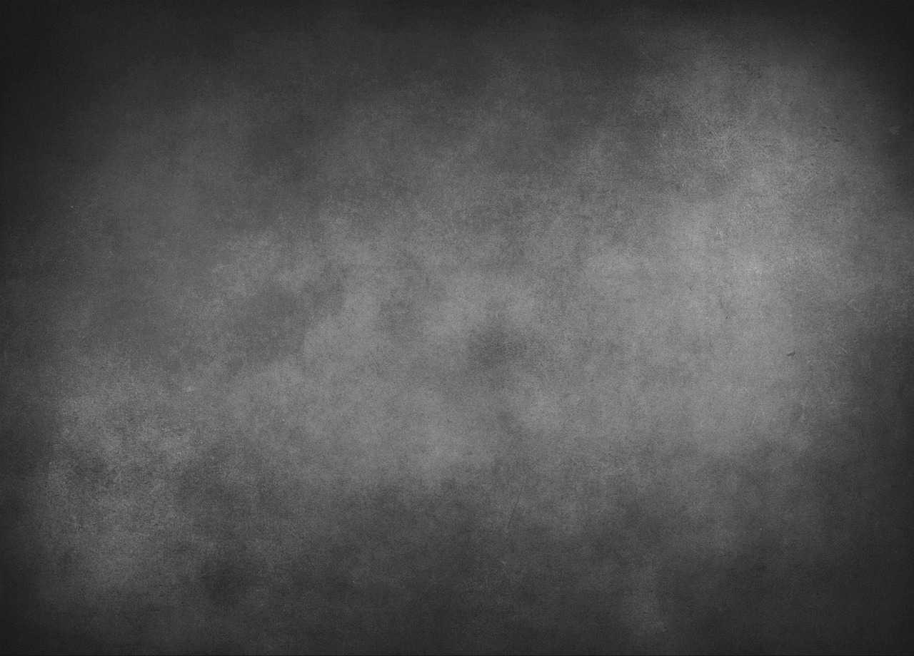

|

|
Тип питания
|
Набор массы
|
Массонаборный тип питания направлен на создание калорийного избытка, что является необходимым условием
для роста мышечной массы. В рационе должны преобладать высококалорийные продукты, богатые белками, углеводами
и полезными жирами. Основное внимание уделяется источникам белка, таким как куриная грудка, рыба, яйца и бобовые,
которые необходимы для восстановления и роста мышечных волокон. Углеводы, в свою очередь, играют важную роль в пополнении
энергетических запасов, поэтому рекомендуется употреблять сложные углеводы, такие как овсянка и картофель. Необходимо также
следить за достаточным потреблением витаминов и минералов, чтобы поддерживать общий уровень здоровья и физическую активность.
|
Сушка
|
На этапе сушки важно сосредоточиться на снижении процента жира при сохранении мышечной массы.
Для этого тип питания должен содержать низкий уровень углеводов и высокое количество белка.
Основное внимание уделяется постным источникам белка, таким как куриная грудка, рыба и нежирные молочные продукты.
Углеводы следует выбирать из овощей и небольшого количества фруктов, чтобы обеспечить организм необходимыми витаминами
и минералами. Также важно следить за потреблением жиров, выбирая полезные источники, такие как оливковое масло и авокадо.
Питьевой режим также играет ключевую роль, так как достаточное количество жидкости помогает поддерживать метаболизм и
выводить токсины.
|
Поддержание
|
На этапе поддержания веса важно сбалансировать потребление калорий с их расходом.
Тип питания должен включать разнообразные источники макро- и микроэлементов. Рекомендуется
употреблять достаточное количество белка для поддержания мышечной массы, а также углеводы из
цельнозерновых продуктов, фруктов и овощей для обеспечения энергии. Жиры также должны присутствовать в рационе,
предпочтительно в виде полезных источников, таких как орехи, семена и растительные масла. Регулярное питание и
контроль порций помогут поддерживать стабильный вес и общее здоровье.
|